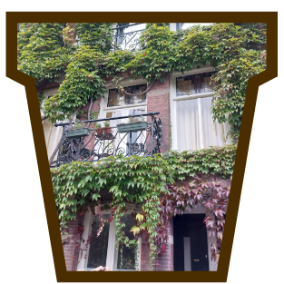

Voorbeelden
Het groene buurt initiatief kan op vele manieren worden toegepast. De meest opvallende voorbeelden die ik zelf in de stad ben tegengekomen heb ik hier voor jullie neergezet.
Groene balkon
Dit balkon laat goed zien dat de stad duurzaam maken op een mooie manier kan. Door alleen al een paar klimplanten op het balkon te plaatsen wordt de stad duurzamer en mooier.
